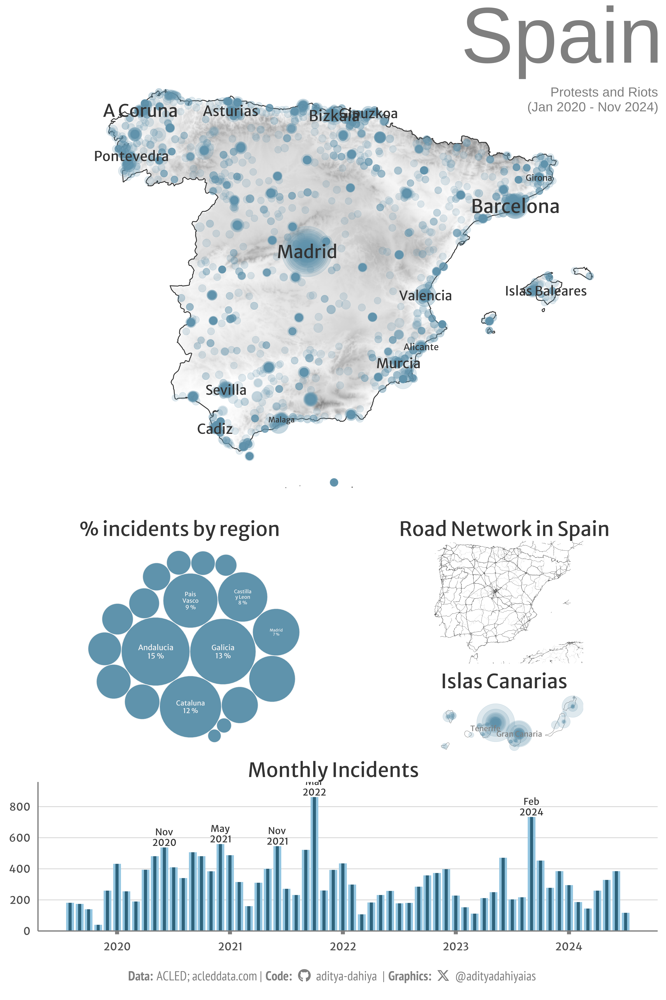

Reproducing maps from J. Luengo-Carbera on protests around different European Countries using ACLED Data
#TidyTuesday
Maps
Governance
{sf}
Author
Aditya Dahiya
Published
January 6, 2025
An attempt to re-create the protests size map from Jose Luengo-Cabrera’s post on X (Twitter) which he created using Mapbox.

Figure 1: A compilation graphic on protests in Spain, location and numbers.
How I made this graphic?
Loading required libraries, data import & creating custom functions. Downloading the logo.
Code
# Final plot toolslibrary(scales) # Nice Scales for ggplot2library(fontawesome) # Icons display in ggplot2library(ggtext) # Markdown text support for ggplot2library(showtext) # Display fonts in ggplot2library(colorspace) # Lighten and Darken colourslibrary(patchwork) # Compiling Plots# Mapping Toolslibrary(sf) # Simple Features in Rlibrary(terra) # Rasters in Rlibrary(tidyterra) # Plotting rasters with ggplot2library(osmdata)# Data Import and Wrangling Toolslibrary(tidyverse) # All things tidy# Fetch data from https://acleddata.com/data-export-tool/# Data not uploaded or attached here respecting Copyrightsraw_data <-read_csv("acled_data_europe_central_asia.csv")elevation_raster <-rast("temp.tif")
# Saving a thumbnaillibrary(magick)# Saving a thumbnail for the webpageimage_read(here::here("projects", "acled_data_maps.png")) |>image_resize(geometry ="x400") |>image_write( here::here("projects", "images","acled_data_maps_logo.png" ) )
Session Info
Code
# Data Import and Wrangling Toolslibrary(tidyverse) # All things tidy# Final plot toolslibrary(scales) # Nice Scales for ggplot2library(fontawesome) # Icons display in ggplot2library(ggtext) # Markdown text support for ggplot2library(showtext) # Display fonts in ggplot2library(colorspace) # Lighten and Darken colourslibrary(patchwork) # Compiling Plots# Mapping Toolslibrary(sf) # Simple Features in Rlibrary(terra) # Rasters in Rlibrary(tidyterra) # Plotting rasters with ggplot2sessioninfo::session_info()$packages |>as_tibble() |>select(package, version = loadedversion, date, source) |>arrange(package) |> janitor::clean_names(case ="title" ) |> gt::gt() |> gt::opt_interactive(use_search =TRUE ) |> gtExtras::gt_theme_espn()
Table 1: R Packages and their versions used in the creation of this page and graphics